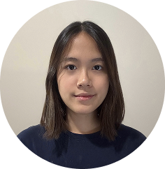
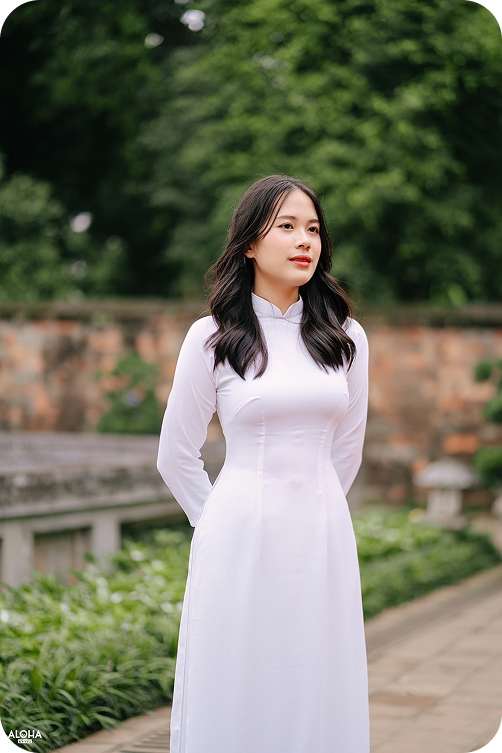
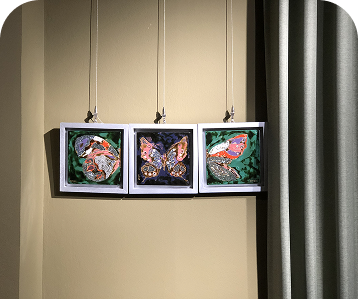
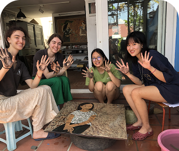
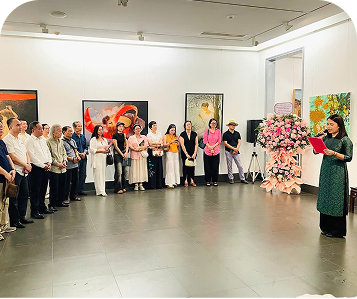
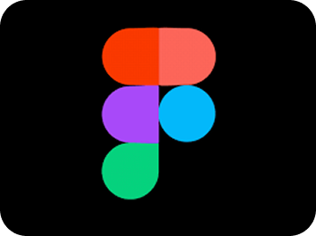
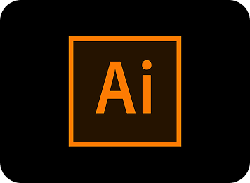
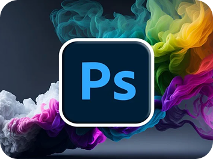

Hi, I’m Hanh Minh Tran
Artist/Illustrator & UI/UX Designer
I create meaningful, handcrafted art experiences rooted in traditional techniques, especially lacquer arts. My work focuses on blending cultural heritage with thoughtful, modern expression, bringing depth and intention to every piece.
I create meaningful, handcrafted art experiences rooted in traditional techniques, especially lacquer arts. My work focuses on blending cultural heritage with thoughtful, modern expression, bringing depth and intention to every piece.


About Me
My Skills
Get In Touch
View My Work

Featured Projects
A selection of recent work showcasing my skills and experience
Art Exhibition at
Babeeni Art Center
-
May 2023
Enfance Partenariat Vietnam - 24 July 2022
Designer and Emcee at Vietnam National Fine Arts Museum - May 2025
An Art Center that always wishes to devote all its efforts to promoting artworks and connecting artists with the community of people who love art. Display artwork “The Color of Nature" in the “The Flow of Lacquer Art" exhibition.
A non-profit organization in Versailles, France. I volunteering and
supporting in the introduction of Vietnamese Traditional Lacquer Art to
Enfance members
Directed, design and emcee for art exhibition “Nhung Nguoi Ban”.
Lacquer
Teacher Mentoring
Public Speaking
Art Managing

Designing
Charity Work
Community Service

Skill & Expertise
A diverse skill set spanning design, development, and deployment

Have a project in mind or want to collaborate? I'd love to hear from
you.
Get In Touch
Let's Work Together
I'm always open to discussing new projects, creative ideas, or
opportunities to be part of your vision.


Email
tranhanhminh123@gmail.com
200 University ave, Waterloo, ON
+ (437) - 424 - 4578
Location
Phone
EMAIL
NAME
Connect
© 2025 Hanh Minh Tran. All rights reserved.
Projects
Skills
Contact
HANH MINH TRAN
An Artist and Illustrator creating meaningful artwork.
Quick Link
About


About Me
Creative Problem Solver
About Me
Creative Problem Solver







